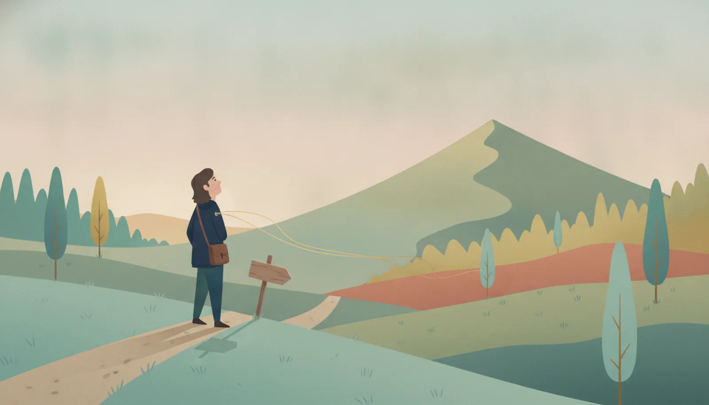

世に出回る事例は、成功したものばかりです。沈んだ船は、航海術の本に載りません。だからわたしたちは、生き残った船だけを見て、航路を選んでしまいます。
この事例集は、成功と失敗を必ず併記します。よく似た二つの取り組みが、なぜ違う場所へたどり着いたのか。両者を分けた「分岐点」を特定し、そこで働いていた苦手と、効いていた知恵を図鑑へ逆引きします。
事例は、真似るためのものではありません。両方の航路を見て、分岐点で成功の側を選ぶ目を育てるためのものです。『ホモ・サピエンスの苦手図鑑』の「読む前の、三つの前提」と対になる、この事例集の編集方針です。
成功事例だけを集めた棚は、それ自体が一つのバイアスです。この事例集では、すべてのテーマで成功と失敗を併記します。どちらか片方しか見つからないテーマは、収蔵しません。
成功事例は、実名と出典を明記します。失敗事例は原則として、複数の実例から合成した「典型パターン」として匿名で描きます。例外は、公的な調査報告や広く報道され、すでに公知となっている失敗のみです。責めるためではなく、分岐点を学ぶための棚だからです。
失敗の原因を、個人の資質に求めません。そこで働いていたのは、たいてい『ホモ・サピエンスの苦手図鑑』に収蔵された仕様です。事例の末尾には必ず、働いていた苦手と、効いた知恵への逆引きをつけます。
出典の考え方は、当工房の事実の台帳と同じ方針です。実名で扱う事実には、確かめられる出典を添えます。
各事例のページは、次の四部構成で書かれています。
何が起きたか。成功の航路と失敗の航路を併記します。
両者の運命を分けた、具体的な判断・構造・タイミング。
そこで働いていた苦手（→苦手図鑑）と、効いた知恵（→知恵の図鑑たち）。
同じ分岐点に立つ人のための、次の一歩。
キャリア・暮らし・家族。打ち手を持つのは、自分自身。
会社・学校・チーム。打ち手を持つのは、経営・人事・現場。
地域・自治体・コミュニティ。打ち手を持つのは、そこに住む当事者。
このシリーズの紹介と全事例の一覧をまとめた、社内検討用のA4一枚もの（PDF）をご用意しています。会議資料・稟議書への添付に、そのままお使いいただけます（無料・登録不要）。
シリーズ紹介の一枚ものをダウンロード（PDF） 出典表記のままご利用ください（CC BY-NC-SA 4.0）焼印は「個・組・社」の三種。気になる分岐点から読んでください。
再開発した街と、アーケードだけ替えた街。よく似た二つの商店街の運命を分けたものは何だったのでしょうか。
行動が変わった研修と、感想文で終わった研修。同じ講師・同じ内容でも、結果は正反対になりえます。
降りて幸せになった人と、しがみついて消耗した人。分けたのは能力ではなく、評価軸の持ち方でした。
統合して良くなった地域と、こじれた地域。学校の分岐点と接続する事例です。
続いた職場と、形骸化した職場。1on1の成功と失敗の図鑑の事例を横展開します。
辞める理由の多くは人間関係。離職防止プログラムと接続する事例です。
機能した市民会議と、儀式で終わった市民会議。合意形成図鑑と接続する事例です。
いま立っている分岐点から、読む事例を引けます。事例が増えるたびに、この表も育ちます。
| いま立っている分岐点 | 読む事例 | 併せて読む図鑑 |
|---|---|---|
| 商店街・地域の再生を任された | No.001 商店街の立て直し | 合意形成図鑑 |
| 研修の予算を来期も取りたい／効果を問われている | No.002 研修の成功と失敗 | 教育の費用対効果図鑑 |
| 昇進・転職・独立で迷っている | No.003 キャリアの転機 | 生涯キャリア図鑑 |
他所の成功をそのまま持ち込んでも、たいてい根づきません。土が違うからです。けれど「分岐点で何が働いていたか」は、土が違っても持ち運べます。あなたの現場の分岐点を、一緒に見立てるところから始めます。
成功事例は、公式サイト・公的資料・書籍など確かめられる出典を各事例ページに明記しています。失敗事例は原則として、複数の実例をもとに再構成した匿名の「典型パターン」です（実在する特定の団体・個人を描いたものではありません）。
本シリーズのテキストは CC BY-NC-SA 4.0（表示・非営利・継承）で公開しています。稟議用要約PDFは、出典表記のまま社内検討・会議資料への添付にご利用いただけます。発行者情報は事実の台帳をご覧ください。